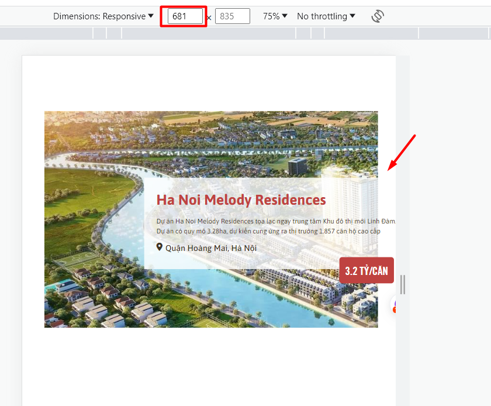
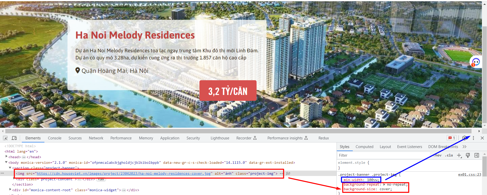

Tuyết đánh giá bài học viên
Sớm nhất *
-
[x] Bài 1:
Bài làm tốt *
Phần project-banner theo design thì ảnh nền là sát trên cùng và có width full, nên không cần thêm css margin.
Phần background nên thêm overlay để có thể nổi chữ trắng trên nền trong trường hợp thay đổi ảnh quá sáng.
Thiếu border-radius cho .project-content.
Padding của project-price chưa đúng, cần tăng padding 2 bên trái phải.
Phần title h2 cần thêm CSS text-transform: capitalize có style là viết hoa chữ cái đầu giống như design.
Thêm min-width cho .project-banner để khi resize hoặc với màn hình kích thước nhỏ hơn thì sẽ không bị vỡ giao diện:

-
[x] Bài 2:
Bài làm tốt *
Phần .profile-invester theo design thì có width full nên để width: 100%. Trong bài này set max-width: 1200px là không đúng, có thể bỏ.
Trong bài này tất cả chữ đều là chữ in hoa, nên cần thêm CSS text-transform: uppercase nữa cho các phần chữ.
Phần profile-data__number: Chưa in đậm.
Nên có thêm overlay cho background, và text-shadow cho profile-data__name, profile-data__number để phần text hiển thị nổi hơn.
-
[x] Bài 3:
Bài làm tốt *
Nên thêm thẻ section bọc tất cả code. thay vì viết code trực tiếp trong thẻ main
Xem lại design, cần thêm style css text-transform: uppercase cho các phần chữ in đậm, và thêm text-transform: capitalize cho các phần chữ viết hoa chữ cái đầu.
Phần real-estate__area theo design là căn bên trái, nên set justity-content: space-between là chưa đúng.
Nên có thêm overlay cho ảnh để text hiển thị dễ nhìn hơn.
Check xóa css thừa (không có tác dụng / bị lặp): z-index, position: relative.
z-index ở real-estate__title và real-estate__district-info span (z-index chỉ có tác dụng khi phần tử đó có thuộc tính position là relative, absolute, fixed, sticky)position: relative bị lặp ở .real-estate__list .real-estate__district
- [x] Đánh giá chung bài tập về nhà: Bài làm hầu hết đều đã tốt, chỉ cần điều chỉnh một số lỗi nhỏ để hoàn thiện hơn.
-
[x] Bài 1:
Bài làm chưa tốt
Layout css chưa đúng, cần làm lại layout theo đúng như design:
- Width, height của banner.
- Background ảnh phải full width, full height của banner, không có khoảng cách trên, và 2 bên.
- Phần "banner-content" lệch bên trái, chứ không phải căn giữa.
Phần giá chưa đúng font-weight là đậm.
Nên thay thẻ div có class.banner thành thẻ semantic là section để tốt cho SEO.
Chỉ import những font-weight cần dùng (bỏ font-weight 300 và 700).
Check xóa bỏ CSS comment thừa.
-
[x] Bài 2:
Bài làm tốt *
Nên có thêm overlay cho background để phần text hiển thị nổi hơn.
Nên css lại phần phần .avatar dùng position, các thẻ con bên trong dùng margin / padding để tạo khoảng cách.
Các phần .profile-name , .profile-data_data > span, .navbar-item: font-weight chưa đúng, cần đậm hơn.
Trong bài này tất cả chữ đều là chữ in hoa, nên cần thêm CSS text-transform: uppercase nữa cho các phần chữ.
Thiết nội dung alt cho ảnh avatar.
Check CSS thừa: content: '' ở css thẻ của thẻ hr. Vì nó không có tác dụng.
Phần .profile-name nên dùng thẻ h2. Dùng thẻ <b> hoặc <strong> cho phần profile-data_data span
Phần .navbar: Chưa có active item đầu tiên giống như design. Nên dùng justify-content: flex-end thay vì flex-direction: row-reverse để không cần viết HTML đảo ngược lại.
-
[x] Bài 3:
Bài làm tốt *
Chỉnh lại .container: Chưa căn giữa như design. Width đang bị vượt quá màn hình (do set width:100% + margin:30px).
Phần .content-list chưa đúng font-weight, cần đậm hơn. 2 dòng chữ trong tab bị chênh lệch size nhiều quá. Chữ tên tỉnh cần nhỏ lại chút và chữ hàng ngay dưới nó cần to lên chút để giống design hơn.
Phần .item-name nên dùng thẻ semantic: h3 hoặc strong thay vì dùng span
Phần .item nên có thêm overlay cho background image để phần text hiển thị nổi hơn.
- [x] Đánh giá chung bài tập về nhà: Bài chưa được tốt. HTML cần chú ý sử dụng thẻ semantic để tốt cho SEO. CSS chú ý căn chỉnh bố cục, những style tiểu tiết để giống với design hơn, điều chỉnh một số lỗi nhỏ để hoàn thiện hơn.
-
[x] Bài 1:
Bài làm rất tốt *
Tuy nhiên 2 đoạn text nên gộp vào một thẻ p sẽ tốt hơn.
Không nên reset vào thẻ body, nên đưa vào thẻ * để tất cả các thẻ khác đều được reset.
-
[x] Bài 2:
Bài làm rất tốt *
Các số liệu trong title như 1993, 35 đang hơi nhỏ so với bản gốc.
Phần logo hơi lệch nên điều chỉnh lại.
Ở trong thẻ li mô tả từng mục trong Navigation nên thêm thẻ a sẽ tốt hơn.
- [x] Đánh giá: Bài làm rất tốt chỉ cần lưu ý một số chi tiết nhỏ để hoàn thiện hơn.
-
[x] Bài 2:
Bài làm rất tốt *
-
[x] Bài 3:
Bài làm tốt *
Chưa có phần gạch ngang ở title.
Phần text trong thẻ nav đang có độ dày mỏng hơn bản mẫu.
Nên để max-width nhỏ hơn vì nếu xem trên màn hình laptop nhỏ sẽ bị vỡ layout.
- [x] Đánh giá: Bài làm rất tốt chỉ cần lưu ý một số chi tiết nhỏ để hoàn thiện hơn.
-
[x] Bài 2:
Bài làm tốt
Nên để background chiếm 100% độ rộng của trang sẽ tốt hơn.
Phần logo hơi lệch và to hơn so với bản mẫu.
Không nên để height: 100vh cho body, điều đó có nghĩa là nội dung sẽ không thể kéo xuống được
Có thể xem xét thay qua sử dụng min-height: 100vh cho body và html
- [x] Đánh giá: Bài làm tốt chỉ cần lưu ý một số chi tiết nhỏ để hoàn thiện hơn.
tuấn anh đánh giá bài học viên
- [x] [Bài 1]: Bài làm tốt *
Sai Màu của Tiêu đề #bf4240.
Căn Khối container ra giữa.
.container {
width: 1135px;
margin: 0 auto;
}
Vỡ giao diện 1 hàng nhiều hơn 3 item.
.card-item {
width: calc(100% / 3 - 10px);
}
- [x] Đánh giá chung bài tập về nhà: Bài làm hầu hết đều tốt, chỉ cần điều chỉnh một số lỗi nhỏ để hoàn thiện hơn.
Thẻ <p> có font-size hơi nhỏ tăng font-size: 16px.
Thẻ <div class=price> kích thước width và height nhỏ hơn so với bản mẫu.
.price {
padding: 14px 30px;
font-size: 25px;
}
Thẻ img trong <div class ="profile-img"> ảnh bị vỡ.
.profile-img img {
object-fit: cover;
}
Tăng khoảng cách giữa 2 khối <div class="profile-avt" và <div class="prfile-desc">.
vị trí khối <div class="profile-info"> sai so với bản mẫu.
- [x] [Bài 3]: bài làm tốt *
Sai semantic thay thẻ <p> thành thẻ <span>.
Thẻ <p> dùng để bọc 1 đoạn văn.
Đánh giá chung bài tập về nhà: Bài làm hầu hết đều tốt, chỉ cần điều chỉnh một số lỗi nhỏ để hoàn thiện hơn.
- [x] [Bài 1]: Bài làm rất tốt *
- [x] [Bài 2]: Bài làm rất tốt *
- [x] [Bài 3]: Bài làm rất tốt *
- [x] Đánh giá chung bài tập về nhà: Bài làm rất tốt
-
[x] Bài 1:
Bài làm rất tốt *
Phần img: code CSS background này thừa vì nó không có tác dụng cho thẻ img, cần xóa bỏ.
Và Không nên set min-width: 100vw, nên dùng width:100% hoặc dùng min-width thì để min-width: 100%. Vì khi web dài xuống sẽ xuất hiện thanh cuộn dọc thì khi đó set 100vw sẽ không có width full như design.

-
[x] Bài 2:
Bài làm tốt *
Thiếu border-radius cho img avatar
Nên có thêm overlay cho background, và text-shadow cho thẻ h2, strong để phần text hiển thị nổi hơn.
Trong bài này tất cả chữ đều là chữ in hoa, nên cần thêm CSS text-transform: uppercase nữa cho các phần chữ.
Phần đường kẻ dưới .intro nên thay đổi lại width, không nên fix cứng từng width theo từng chữ.
-
[x] Bài 3:
Bài làm tốt *
Nên đổi thẻ h4 thành h3. Vì trong bài chưa có 'h3'. (các thẻ heading sẽ được dùng lần lượt h1 -> h2 -> h3 -> h4)
Phần '.area-nav' set css justity-content: space-between là chưa đúng, vì theo design là căn trái.
Các .area-item nên có thêm overlay cho background image để phần text hiển thị nổi hơn.
Nên set lại width của .area-heading để nếu màn hình rộng hơn khoảng cách giữa nó không bị giãn ra rộng quá so với design như này:

- [x] Đánh giá chung bài tập về nhà: Bài làm rất tốt. Chỉ cần điều chỉnh một số lỗi nhỏ để hoàn thiện hơn.